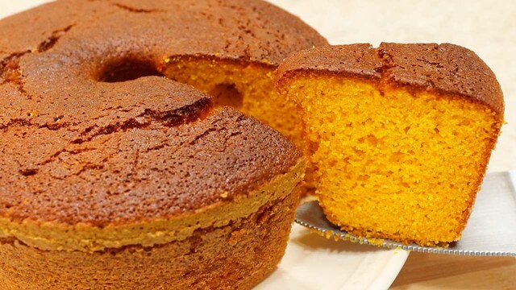
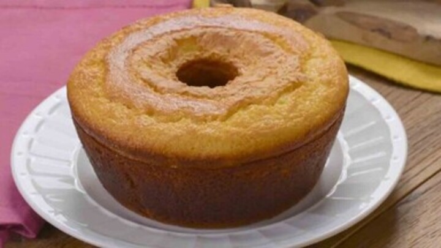
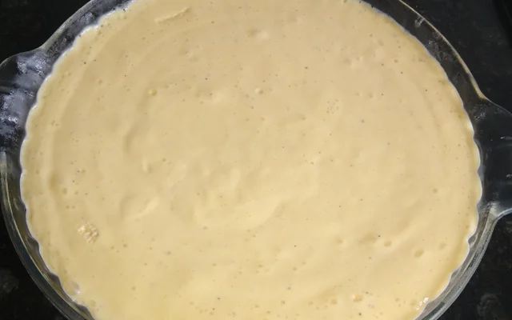
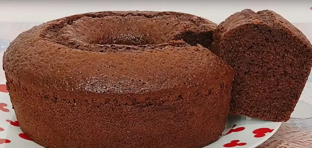

Bem-vindo ao Blog Doce Delícia!
Estamos felizes por você estar aqui! Navegue pelas receitas, descubra dicas práticas e torne sua cozinha mais doce e criativa a cada dia.
sara.ferreira

Receitas para adoçar o seu dia
Estamos felizes por você estar aqui! Navegue pelas receitas, descubra dicas práticas e torne sua cozinha mais doce e criativa a cada dia.
sara.ferreira

1. No liquidificador, bata o óleo, as cenouras, os ovos e o açúcar até obter uma mistura homogênea.
2. Peneire a farinha de trigo e adicione aos poucos no liquidificador e misture delicadamente até incorporar todos os ingredientes. Por fim adicione o fermento em pó e bata um pouco.
3. Despeje a massa em uma forma untada e enfarinhada. Leve ao forno pré-aquecido a 180°C por aproximadamente 40 minutos ou até que um palito inserido no centro do bolo saia limpo.
4. Deixe o bolo esfriar antes de desenformar e servir. Aproveite essa deliciosa receita de bolo de cenoura!
Dica: Para deixar o bolo mais estruturado você pode substituir 1/3 do da farinha de trigo por maisena.
sara.ferreira

1. Unte uma forma com manteiga e polvilhe com trigo.
2. Escorra o líquido do milho e use a própia lata para as medidas. No liquidificador, bata o milho (sem a água), o leite, os ovos, o açúcar, o flocão e o óleo.
3. Na forma untada despeje a massa e leve ao forno pré-aquecido a 180°C por cerca de 40 minutos ou até dourar e o palito sair limpo.
4. Retire do forno, deixe esfriar e desenforme.
Dica: Se quiser, acrescente coco ralado na massa para deixando ainda mais sabor.
sara.ferreira

1. Despeje no liquidificador o leite condensado, o creme de leite e o concentrado de maracujá. Misture bem.
2. Bata por cerca de 3 minutos até obter uma mistura homogênea e cremosa.
3. Prove a mistura e, se desejar um sabor mais intenso de maracujá, adicione um pouco mais do concentrado e bata novamente.
4. Transfira a mistura para uma tigela ou recipiente e leve à geladeira por pelo menos 1 hora para firmar.
5. Distribua em taças e leve à geladeira por no mínimo 2 horas antes de servir.
Dica: Esta receita é super prática e rápida de preparar, perfeita para quem não tem muito tempo!
sara.ferreira

1. Unte uma forma de buraco pequena com margarina e trigo. E reserve.
2. Bata no liquidificador o óleo, o leite e os ovos até obter uma mistura homogênea.
3. Acrescente o trigo, o açúcar e o achocolatado ou chocolate em pó. E bata novamente
4. Em seguida adicione o fermento e bata rapidamente.
5. Despeje a mistura na forma untada. Asse por 40 minutos até que um palito saia com poucas migalhas.
Dica: Se colocar uma colher de chá de bicarbonato de sódio a massa fica mais leve e mais escura.
sara.ferreira